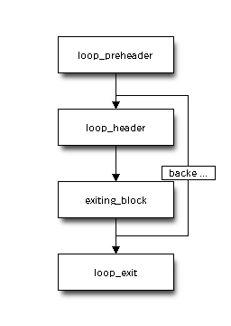

Dart VM Advent Calendar 2012 12/20¶
本日も最適化に関してです。。
LICM¶
LICMとは、ループ不変式の移動という、伝統的な最適化のうちの1つです。
ループで更新されない式を、ループの外(前だったり後だったり)に移動します。
大体のJITコンパイラには実装されています。
本日のお題はこれ
if (FLAG_loop_invariant_code_motion &&
(parsed_function.function().deoptimization_counter() <
(FLAG_deoptimization_counter_threshold - 1))) {
LICM::Optimize(flow_graph);
}
Optimize¶
入り口です。:
void LICM::Optimize(FlowGraph* flow_graph) {
GrowableArray<BlockEntryInstr*> loop_headers;
flow_graph->ComputeLoops(&loop_headers); // Loopの収集
for (intptr_t i = 0; i < loop_headers.length(); ++i) { // Loopをイテレート
BlockEntryInstr* header = loop_headers[i];
// Skip loop that don't have a pre-header block.
BlockEntryInstr* pre_header = FindPreHeader(header); // preheaderを探す。hoist先。
if (pre_header == NULL) continue;
for (BitVector::Iterator loop_it(header->loop_info());
!loop_it.Done();
loop_it.Advance()) {
BlockEntryInstr* block = flow_graph->preorder()[loop_it.Current()];
for (ForwardInstructionIterator it(block); // block内の命令を順に
!it.Done();
it.Advance()) {
Instruction* current = it.Current();
if (!current->IsPushArgument() && !current->AffectedBySideEffect()) { //副作用をもつ場合pass
bool inputs_loop_invariant = true;
for (int i = 0; i < current->InputCount(); ++i) { // loop不変かチェック
Definition* input_def = current->InputAt(i)->definition(); // currentのoperandを走査
if (!input_def->GetBlock()->Dominates(pre_header)) { // operandの所属するblockが、pre_headerを支配しない場合、
inputs_loop_invariant = false; // blockがpre_headerを支配する場合、currentより前に定義されたことになる。
break;
}
}
if (inputs_loop_invariant &&
!current->IsAssertAssignable() &&
!current->IsAssertBoolean()) {
// TODO(fschneider): Enable hoisting of Assert-instructions
// if it safe to do.
Hoist(&it, pre_header, current); // loop-preheaderに命令移動を試す
} else if (current->IsCheckSmi() &&
current->InputAt(0)->definition()->IsPhi()) {
TryHoistCheckSmiThroughPhi( // promote dynamic to Smi
&it, header, pre_header, current->AsCheckSmi());
}
}
}
}
}
}
ループ不変というのは、命令のオペランドが、すべてループ外で定義された値ということです。

メインの最適化は、Hoist()とTryHoistCheckSmiThroughPhi()です。
Hoist()は、ループ中の不変式を、loop_headerに移動します。
TryHoistCheckSmiThroughPhi()は少々特殊です。
前
BB1[loop_preheader]
...
v2 <- xxx
BB2[loop_header]
v1 <- phi(v2, v4) {PT: dynamic}
checkSmi(v1)
後
BB1[loop_preheader]
...
v2 <- xxx
checkSmi(v2)
BB2[loop_header]
v1 <- phi(v2, v4) {PT: Smi}
checkSmiをループの外に追い出して、phiの型をdynamicからSmi型にpromotionします。
Hoist¶
Hoist
void LICM::Hoist(ForwardInstructionIterator* it,
BlockEntryInstr* pre_header,
Instruction* current) {
// TODO(fschneider): Avoid repeated deoptimization when
// speculatively hoisting checks.
if (FLAG_trace_optimization) {
OS::Print("Hoisting instruction %s:%"Pd" from B%"Pd" to B%"Pd"\n",
current->DebugName(),
current->GetDeoptId(),
current->GetBlock()->block_id(),
pre_header->block_id());
}
// Move the instruction out of the loop.
it->RemoveCurrentFromGraph();
GotoInstr* last = pre_header->last_instruction()->AsGoto();
current->InsertBefore(last);
// Attach the environment of the Goto instruction to the hoisted
// instruction and set the correct deopt_id.
ASSERT(last->env() != NULL);
last->env()->DeepCopyTo(current);
current->deopt_id_ = last->GetDeoptId();
}
Hoist対象の命令、itを、pre_headerの最後尾に移動します。
TryHoistCheckSmiThroughPhi¶
try
void LICM::TryHoistCheckSmiThroughPhi(ForwardInstructionIterator* it,
BlockEntryInstr* header,
BlockEntryInstr* pre_header,
CheckSmiInstr* current) {
PhiInstr* phi = current->InputAt(0)->definition()->AsPhi();
if (!header->loop_info()->Contains(phi->block()->preorder_number())) {
return;
}
if (phi->GetPropagatedCid() == kSmiCid) { // Phiが型伝搬の結果既にSmiだった場合、不要なCheckSmiを削除
it->RemoveCurrentFromGraph();
return;
}
// Check if there is only a single kDynamicCid input to the phi that
// comes from the pre-header.
const intptr_t kNotFound = -1;
intptr_t non_smi_input = kNotFound;
for (intptr_t i = 0; i < phi->InputCount(); ++i) {
Value* input = phi->InputAt(i);
if (input->ResultCid() != kSmiCid) {
if ((non_smi_input != kNotFound) || (input->ResultCid() != kDynamicCid)) {
// There are multiple kDynamicCid inputs or there is an input that is
// known to be non-smi.
return;
} else {
non_smi_input = i; // phiのオペランドの片割れのSmiでない値
}
}
}
// dynamicなphiのオペランドが見つからなかった、
// もしくはdynamic型のphiのオペランドがpre_headerで定義されていない。。(backedge側がdynamic型)
if ((non_smi_input == kNotFound) ||
(phi->block()->PredecessorAt(non_smi_input) != pre_header)) {
return;
}
// Host CheckSmi instruction and make this phi smi one.
Hoist(it, pre_header, current); // checkSmiをpre_headerへ移動 (1)
// Replace value we are checking with phi's input. Maintain use lists.
Definition* non_smi_input_defn = phi->InputAt(non_smi_input)->definition(); // phiの旧inputを取得
current->value()->RemoveFromInputUseList();
current->value()->set_definition(non_smi_input_defn); <-- phiの旧inputをcheckSmiのinputへ(2)
current->value()->AddToInputUseList();
phi->SetPropagatedCid(kSmiCid); // dynamicからSmiへ (3)
}
後
BB1[loop_preheader]
...
v2 <- xxx
checkSmi(v2) <-- (1) 移動
^ (2) v2へ変更
BB2[loop_header]
v1 <- phi(v2, v4) {PT: Smi} <-- (3) Smiへ変更
CheckSmiがCastのように値を定義せず、Deoptimizeするだけなのが面白いですね。
CheckSmiをHoistしただけで、phiのオペランドv2に変化はないです。Smi型に変わっただけ。
まとめ¶
- よくわからない手抜きエントリーでした。。
- LICMは、ループ不変な命令をループのpre_headerへ移動する。
- Phiがdynamic型、かつCheckSmi命令のinputである場合、PhiをSmiへ置き換え可能か試行する。